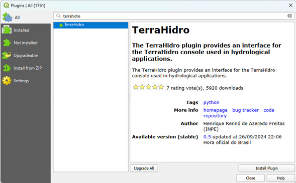
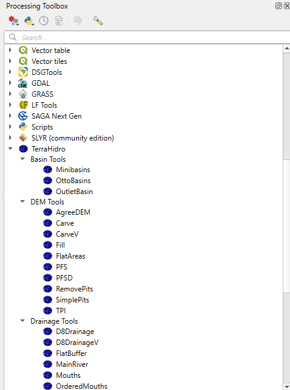

2 Introduction
TerraHidro is an advanced geospatial analysis platform designed for hydrological and geomorphometric applications. Developed at the National Institute for Space Research (INPE), it provides a comprehensive suite of tools for digital elevation model (DEM) preprocessing, flow-direction modeling, watershed and stream network delineation, sink removal, floodplain mapping, and terrain analysis. Unlike traditional cartographic or visualization software, TerraHidro serves primarily as an analytical backend, seamlessly integrating with Geographic Information Systems (GIS) such as QGIS.
The system can be used in two main ways:
QGIS Plugin: For users seeking a graphical workflow, TerraHidro integrates into the QGIS Processing Toolbox, providing intuitive interfaces to execute all functionalities directly within the GIS environment;
Command-Line Interface (CLI): TerraHidro operates as a stand-alone executable with no installation required. Users can run tools directly from a terminal or incorporate them into automated scripts for large-scale processing.
TerraHidro supports raster data in the widely used, e.g. GeoTIFF format, and provides basic vector operations through ESRI Shapefiles.
By combining high-performance processing with open-source accessibility, TerraHidro enables researchers, students, and professionals to carry out hydrological modeling, geomorphological analysis, and environmental management with precision and reproducibility.
Project Highlights
- Graph-based flow representation that unifies local flow across digital elevation models;
- Drainage extraction with pit handling using methods such as Priority First Search (PFS) to remove spurious depressions and connect flow in flat areas;
- Large-basin workflows, with applications demonstrated for Amazon sub-basins;
- Flexible integration on TerraLib (C++), with bindings that enable coupling to other hydrological components;
- Operational efficiency from graph traversal and storage, supporting scalable accumulation and network operations;
- Open architecture that encourages extension and integration in broader GIS environments.
QGIS Plugin Installation and Setup
The TerraHidro plugin for the QGIS Processing Toolbox provides users with interfaces that allow all TerraHidro functionalities to be executed directly inside QGIS. However, please note that simply installing the plugin does not guarantee its functionality. It is also necessary to configure an environment variable named TERRAHIDRO that points to the directory where the TerraHidro executable was extracted.
Installing the TerraHidro Plugin in QGIS
- Open QGIS.
- Go to Plugins > Manage and Install Plugins…
- In the search box, type “terrahidro”.
- Select the TerraHidro plugin and click Install Plugin.
- Make sure to check the option “Show experimental plugins” under Options in the left menu.

After installation, the TerraHidro plugin will appear in the Processing Toolbox.

Configuring the TERRAHIDRO Environment Variable (Windows)
In order for the plugin to work properly, you must configure the environment variable TERRAHIDRO to point to the directory where the TerraHidro executable (th.exe) is located. Follow these steps:
- Open the Control Panel
- Press Win + S to open the search bar.
- Type “Control Panel” and press Enter.
- Press Win + S to open the search bar.
- Access Advanced System Settings
- In the Control Panel, click System and Security.
- Click System.
- On the left panel, click Advanced system settings.
- In the Control Panel, click System and Security.
- Open Environment Variables
- In the System Properties window, go to the Advanced tab.
- Click the Environment Variables… button at the bottom.
- In the System Properties window, go to the Advanced tab.
- Create a New User Variable
- In the User variables section, click New.
- Configure the Variable
- In the Variable name field, type:
TERRAHIDRO
- In the Variable value field, type the full path to the directory where the TerraHidro executable is located.
- Example:
C:\Users\<username>\Documents\PROGRAMS\TerraHidro-5.2.0
- Example:
- In the Variable name field, type:
- Save and Close
- Click OK to save the new variable.
- Click OK again to close the System Properties window.
- Click OK to save the new variable.
Final Step
The TERRAHIDRO environment variable is now configured in your user account, pointing to the directory of the TerraHidro executable. This allows the system to locate and execute TerraHidro from any location in the command prompt or within scripts.
Important: Restart any open applications or command prompts so that they recognize the newly created environment variable.
Command-Line Interface
TerraHidro can be used directly from the command line, making it a flexible and efficient option for processing terrain and hydrological data. The software is distributed as a stand-alone executable, so no installation is required—just extract the files and call the program from your terminal or command prompt.
Before running any operation, it is important to specify the directory where the TerraHidro executable is located. For example:
We recommend placing both the input and output files in the same directory as the TerraHidro executable. This avoids path errors and ensures that the program can easily locate the required files.
The structure of TerraHidro commands is designed to be simple and intuitive. Most tools follow the general pattern:
thcalls the TerraHidro executable.
<operation>specifies the tool to be executed (for example,d8,removepits,pfs,minibasins).
input.tifis the input raster file, usually a Digital Elevation Model (DEM).
output.tifis the resulting raster file generated by the operation.
For example, to remove pits from a DEM, the command would be:
This straightforward structure makes TerraHidro easy to use while still offering powerful capabilities. By storing all files in the same directory and executing commands step by step, users can build reproducible workflows for DEM preprocessing, flow-direction modeling, watershed delineation, and hydrological hazard simulations.
Example: Removing Pits with the pfs Operation
The following example demonstrates how to use TerraHidro from the command line:
C:\data>indicates the working directory where both the TerraHidro executable (th.exe) and the raster files are stored.
thcalls the TerraHidro program.
pfsspecifies the operation to be executed. The Priority-Flood Search (PFS) algorithm is applied to remove sinks or depressions (pits) from a Digital Elevation Model (DEM), generating a hydrologically consistent surface.
inputDEM.tifis the input raster file containing the original DEM.
outputDEM.tifis the output raster file that will be created, representing the pitless DEM.
This simple command ensures that the DEM is corrected for spurious depressions, which is a fundamental preprocessing step before calculating flow directions, contributing areas, and drainage networks.
💡 Tip – Changing the Working Directory
Before running TerraHidro commands, make sure you are in the directory where the executable (
th.exe) and your input/output files are located.On Windows, use the
cdcommand:cd C:\Users\<username>\Documents\PROGRAMS\TerraHidro-5.2.0On Linux/MacOS, use:
cd /home/<username>/PROGRAMS/TerraHidro-5.2.0After changing to the correct directory, you can call TerraHidro tools directly, for example:
th pfs inputDEM.tif outputDEM.tif